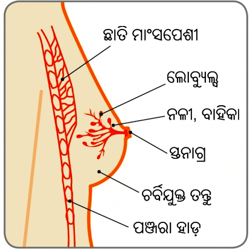

ସ୍ତନାଗ୍ର

ମାରାତ୍ମକ ହୋଇନଥିବା ସ୍ତନ ସ୍ୱାସ୍ଥ୍ୟ ସମସ୍ୟା
ଗାଏନେକୋମାଷ୍ଟିଆ
16 ବର୍ଷ ବୟସ୍କ ତରୁଣ ନାମ ବାଳକ ଏକ ବର୍ଷ ହେବ ବାମ ସ୍ତନରେ ବ୍ୟଥାହୀନ ବୃଦ୍ଧି ଲକ୍ଷ୍ୟ କଲା ଯାହା ସନ୍ତରଣ କଲା ସମୟରେ ତା’ପାଇଁ ଲଜ୍ଜାଜନକ ମନେହେଉଛି |
72 ବର୍ଷୀୟ ଭରତ ଛଅମାସ ହେବ ତାଙ୍କର ଡ଼ାହାଣ ସ୍ତନରେ ଅବିରତ ଅସହଜବୋଧତା ହେବା ସହ ଏକ ଗୁଳା ହୋଇଥିବା ଲକ୍ଷ୍ୟକଲେ |
ସ୍ତନ

ସ୍ତନାଗ୍ର
ଗାଏନେକୋମାଷ୍ଟିଆ କ’ଣ?
ଗାଏନେକୋମାଷ୍ଟିଆ ହେଉଛି ପୁରୁଷ ସ୍ତନ ତନ୍ତୁର ବୃଦ୍ଧି | ଏହା ହେଉଛି ଏକ ସାଧାରଣ, ମାରାତ୍ମକ ହୋଇନଥିବା (କର୍କଟ ନୁହେଁ) ଅବସ୍ଥା ଯାହା ମୁଖ୍ୟତଃ ତରୁଣ ବୟସ୍କ ପିଲା ଓ ବୃଦ୍ଧାବସ୍ଥାରେ ପୁରୁଷମାନଙ୍କୁ ହୁଏ, କିନ୍ତୁ ଏହା ଯେକୌଣସି ବୟସର ପୁରୁଷମାନଙ୍କୁ ଆକ୍ରାନ୍ତ କରିପାରେ | ଯଦିଓ ଗାଏନେକୋମାଷ୍ଟିଆ ଖୁବ୍ ସାଧାରଣ ଅଟେ, କିନ୍ତୁ ଏହି ବିଷୟରେ ବିଶେଷ କିଛି କଥାବାର୍ତ୍ତା ହୁଏନାହିଁ କାରଣ କେତେକ ଲୋକେ, ନିର୍ଦ୍ଦିଷ୍ଟରୁପେ ପୁଅମାନେ ଏଥିପାଇଁ ଅପଦସ୍ତ ଅନୁଭବ କରିଥାଆନ୍ତି | ଗାଏନେକୋମାଷ୍ଟିଆ ପ୍ରାୟତଃ ତରୁଣ ବୟସର ପୁଅପିଲାମାନଙ୍କୁ ଉଦବିଗ୍ନ କରିବାସହ ଚିନ୍ତିତ କରିଦେଇଥାଏ | ତିନିଜଣରୁ ଦୁଇଜଣ ତରୁଣ ବୟସର ପୁଅମାନଙ୍କୁ ଗାଏନେକୋମାଷ୍ଟିଆ କିଛି ମାତ୍ରାରେ ହୋଇଥାଏ ଏବଂ 90% କ୍ଷେତ୍ରରେ ତାହା ଆପେଆପେ ଭଲ ହୋଇଯାଏ |
ଗାଏନେକୋମାଷ୍ଟିଆର ମୁଖ୍ୟ କାରଣମାନପୁଅପିଲା ମାନଙ୍କ କ୍ଷେତ୍ରରେ ଯୌନ ପରିପକ୍ୱତା ଆରମ୍ଭ ହୁଏ ଯେତେବେଳେ ସେମାନେ ତରୁଣ ବୟସରେ ପହଞ୍ଚିଥାଆନ୍ତି | ଅବଶ୍ୟ, କେତେକ ପୁଅମାନେ 10 ବର୍ଷ ବୟସରେ ପଦାର୍ପଣ କଲେ ପରିବର୍ତ୍ତନମାନ ଲକ୍ଷ୍ୟକରନ୍ତି | ଯେତେବେଳେ ଯୌନପରିପକ୍ୱତା ଆରମ୍ଭ ହୁଏ, ସେତେବେଳେ ଅଷ୍ଟ୍ରୋଜେନ୍ ଏବଂ ଟେଷ୍ଟୋଷ୍ଟେରନ୍ ହର୍ମୋନ୍ ସ୍ତରରେ ବୃଦ୍ଧିହେବା ଆରମ୍ଭ ହୁଏ | ଅଷ୍ଟ୍ରୋଜେନ୍ ସ୍ତନକୁ ବଢ଼େଇବାରେ ସାହାଯ୍ୟ କରେ ଏବଂ ଟେଷ୍ଟୋଷ୍ଟେରନ୍ ସ୍ତନବୃଦ୍ଧିକୁ ବନ୍ଦକରାଏ |
ଯୌନପରିପକ୍ୱତା ସହ ଜଡ଼ିତ ଅନ୍ୟାନ୍ୟ ପରିବର୍ତ୍ତନ ଗୁଡିକ, ପୁଅପିଲାମାନେ ଲକ୍ଷ୍ୟ କରିପାରନ୍ତି ଯେ, ସେମାନଙ୍କର ସ୍ତନଗୁଡିକ କୋମଳ ଲାଗୁଛି ଏବଂ ବଢ଼ୁଛି | ଏହା ଏଥିପାଇଁ ହେଉଛି କାରଣ ଯୌନପରିପକ୍ୱତା ଅବଧିରେ ଏଭଳି ସମୟ ଆସେ ଯେତେବେଳେ ଶରୀରରେ ଟେଷ୍ଟୋଷ୍ଟେରନ୍ ଅପେକ୍ଷା ଅଷ୍ଟ୍ରୋଜେନ୍ ଅଧିକ ହୁଏ, ଯାହା ସ୍ତନ ତନ୍ତୁ ଗୁଡିକରେ ପରିବର୍ତ୍ତନ କରାଏ | ଯଦି ଅଷ୍ଟ୍ରୋଜେନ୍ ସ୍ତର ଟେଷ୍ଟୋଷ୍ଟେରନ୍ ସ୍ତର ଅପେକ୍ଷା ବଢ଼ିବା ଜାରିରୁହେ, ତେବେ ଡକ୍ଟ ଏବଂ ଲୋବ୍ୟୁଲ୍ ଗୁଡିକ ବଢ଼ିବ ଏବଂ ସ୍ତନ ଗୁଡିକ ବଡ଼ହେବ ଏବଂ ଅଧିକ ଦୃଶ୍ୟମାନ ହେବ |
ପ୍ରାୟ 15 ବର୍ଷ ବୟସ ହେବାବେଳକୁ, ଟେଷ୍ଟୋଷ୍ଟେରନ୍ ସ୍ତର ଅଷ୍ଟ୍ରୋଜେନ୍ ସ୍ତର ଅପେକ୍ଷା କ୍ରମାଗତ ଭାବରେ ଅଧିକ ସ୍ତର ହୋଇ ସ୍ଥିର ହେବା ଆରମ୍ଭକରେ | ଯେତେବେଳେ ଜଣେ ପୁରୁଷ ପିଲାକୁ 19 ବର୍ଷ ବୟସ ହୁଏ, ସେତେବେଳେ ତା’ର ସ୍ତନଗୁଡିକ ସଂକୁଚିତ ଏବଂ ସମତଳ ହେବାକୁ ଆରମ୍ଭ କରେ |
ବୟସ ବଢ଼ିବାଯେତେବେଳେ ଜଣେ ବ୍ୟକ୍ତିର ବୟସ ବୃଦ୍ଧି ହୁଏ ସେତେବେଳେ ସେମାନଙ୍କର ଶରୀରରେ ଚର୍ବିର ମାତ୍ରା ବୃଦ୍ଧି ପାଇବା ଆରମ୍ଭ ହୁଏ, ଯାହା ଅଷ୍ଟ୍ରୋଜେନ୍ ଉତ୍ପନ୍ନ କରେ | ଅତିରିକ୍ତ ଭାବରେ, ଯେତେବେଳେ ପୁରୁଷମାନେ ବୃଦ୍ଧ ହେବାକୁ ଆରମ୍ଭ କରନ୍ତି ସେମାନେ କମ୍ ପରିମାଣର ଟେଷ୍ଟୋଷ୍ଟେରନ୍ ଉତ୍ପନ୍ନ କରନ୍ତି | ଅଷ୍ଟ୍ରୋଜେନ୍ ସ୍ତରରେ ବୃଦ୍ଧି ଏବଂ ଟେଷ୍ଟୋଷ୍ଟେରନ୍ ସ୍ତରରେ ହ୍ରାସ ପାଇବାର ସମଷ୍ଟି ସ୍ତନକୁ ବଡ଼ କରାଏ | ପରବର୍ତ୍ତି ଜୀବନରେ ଓଜନ ବଢ଼ିଲେ ତାହା ନିର୍ଦ୍ଦିଷ୍ଟ ଭାବରେ ସ୍ତନ ଜାଗାରେ ଲକ୍ଷ୍ୟକରିହୁଏ ଓ ଫଳତଃ ସ୍ତନ ବଡ଼ ହୁଏ | ଏହାକୁ ସିଉଡ଼ୋ ବା ମିଥ୍ୟା -ଗାଏନେକୋମାଷ୍ଟିଆ କୁହାଯାଏ | ଅନେକ ପୁରୁଷମାନେ ବୟସ ବଢ଼ିବା ପ୍ରକ୍ରିୟାର ଏହା ଅନ୍ୟଏକ ଅଂଶରୁପେ ମନେକରି ଏହି ପରିବର୍ତ୍ତନକୁ ଗ୍ରହଣ କରିପାରନ୍ତି |
ଅନ୍ୟାନ୍ୟ କାରଣମାନକେତେକ ଡ୍ରଗ୍ଗୁଡିକ (ଉଭୟ ପ୍ରେସକ୍ରିପସନ୍ ଏବଂ ବେଆଇନ) ଗାଏନେକୋମାଷ୍ଟିଆର କାରଣ ହୋଇପାରେ | ସେଗୁଡିକରେ ଅଷ୍ଟ୍ରୋଜେନ୍ ଥାଇପାରେ ଯାହାକି ଶରୀରରେ ସଞ୍ଚାଳିତ ହେଉଥିବା ହର୍ମୋନ୍ ସ୍ତରକୁ ବୃଦ୍ଧି କରେଇପାରେ, କିମ୍ବା ଅଷ୍ଟ୍ରୋଜେନ୍ ଭଳି ପ୍ରଭାବ ଥାଇପାରେ | କାନ୍ନାବିସ୍ ବା ଗଞ୍ଜେଇ ଭଳି ଏକ ଡ୍ରଗ୍ରେ ଏଭଳି ହୁଏ | କେତେକ ଡ୍ରଗ୍ ଟେଷ୍ଟୋଷ୍ଟେରନ୍ ଉତ୍ପାଦନକୁ ସମୁଳେ ଅବରୁଦ୍ଧ କରିଦିଅନ୍ତି, ସଞ୍ଚାଳିତ ହେଉଥିବା ଟେଷ୍ଟୋଷ୍ଟେରନ୍ ସ୍ତରକୁ ହ୍ରାସ କରିଦିଅନ୍ତି |
ବିଭିନ୍ନ ପ୍ରକାରର ପ୍ରେସକ୍ରାଇବ କରାଯାଉଥିବା ଔଷଧ ଗୁଡିକ ଶରୀରରେ ଥିବା ହର୍ମୋନ୍ ସନ୍ତୁଳନରେ ପରିବର୍ତ୍ତନ କରନ୍ତି | ଉଚ୍ଚ ରକ୍ତଚାପ କିମ୍ବା ହୃତପିଣ୍ଡ ଅବସ୍ଥା, ମାନସିକ ରୋଗାବସ୍ଥା, ପାକସ୍ଥଳୀ ଘାଆ, କେତେକ କର୍କଟ ଚିକିତ୍ସା ଏବଂ କେତେକ ଆଣ୍ଟିବାୟୋଟିକ୍ ଗୁଡିକ ତଥା ମାଂସପେଷୀ ଗଠନକାରୀ (ଆନାବୋଲିକ୍ ଷ୍ଟେରଏଡ଼) ଔଷଧ ସେବନକଲେ, ସେଗୁଡିକ ଗାଏନେକୋମାଷ୍ଟିଆ କରାଏ |
ଜଡ଼ିବୁଟି ଉତ୍ପାଦମାନକେତେକ ଜଡ଼ିବୁଟି ପରିପୁରଣକାରୀ ଏବଂ କେତେକ କଜମେଟିକ୍ସରେ ଅଷ୍ଟ୍ରୋଜେନ୍ ରହିଥାଏ | ଏହା, ଉଭୟ ଶିଶୁ ଓ ପ୍ରାପ୍ତ ବୟସ୍କମାନଙ୍କ କ୍ଷେତ୍ରରେ, ଶରୀରରେ ସଞ୍ଚାଳିତ ହେଉଥିବା ହର୍ମୋନ୍ ସ୍ତରକୁ ବୃଦ୍ଧି କରେଇପାରେ କିମ୍ବା ଅଷ୍ଟ୍ରୋଜେନ୍ ଭଳି ପ୍ରଭାବ ଥାଇପାରେ | ଥରେ ଆପଣ ତାହା ବ୍ୟବହାର କରିବା ବନ୍ଦକଲେ, ପ୍ରଭାବମାନ ବନ୍ଦ ହେବ ଏବଂ ସମୟକ୍ରମେ ସ୍ତନତନ୍ତୁ ଗୁଡିକ ସ୍ଥିର ହୋଇଯିବ |
ଆହାର ଓ ଓଜନଜଣେ ବ୍ୟକ୍ତିର ଶରୀରରେ ଯେତେ ଅଧିକ ମାତ୍ରାରେ ଚର୍ବିକୋଷ ଥାଏ, ସେତିକି ଅଧିକ ମାତ୍ରାରେ ସେଗୁଡିକ ଅଷ୍ଟ୍ରୋଜେନ୍ ଉତ୍ପନ୍ନ କରନ୍ତି | ପ୍ରତିବଦଳରେ ଏହା ସ୍ତନତନ୍ତୁକୁ ବଢ଼ିବାକୁ ଦିଏ | ଏକ ସୁ-ସନ୍ତୁଳିତ ଆହାର ଏବଂ ବ୍ୟାୟାମ ଏକ ସ୍ୱାସ୍ଥ୍ୟକର ଓଜନ ବଜାୟ ରଖିବାରେ ଗୁରୁତ୍ୱପୁର୍ଣ୍ଣ ଅଟେ |
ମଦ୍ୟଅତ୍ୟଧିକ ମାତ୍ରାରେ ମଦ୍ୟ ସେବନକଲେ ତାହା ଯକୃତକୁ ପ୍ରଭାବିତ କରେଇବା ଦର୍ଶାଇଛି ଏବଂ ଅନେକ ସଂଖ୍ୟକ ଅବସ୍ଥା ସୃଷ୍ଟି କରାଏ | ବହୁମାତ୍ରାର ମଦ୍ୟ ଯକୃତକୁ ଉତ୍ତେଜିତ କରେ ଏବଂ ହର୍ମୋନ୍ ସନ୍ତୁଳନରେ ବାଧା ସୃଷ୍ଟି ହୁଏ | ଟେଷ୍ଟୋଷ୍ଟେରନ୍ ସଞ୍ଚାଳନ କରିବା ହ୍ରାସପାଏ, କିନ୍ତୁ ଅଷ୍ଟ୍ରୋଜେନ୍ ସ୍ତର ବୃଦ୍ଧିପାଏ (ଯେହେତୁ ଯକୃତ ଅଷ୍ଟ୍ରୋଜେନ୍ ସଞ୍ଚାଳନ କରିବା ବନ୍ଦ କରିଦିଏ) | ଏହାର ଅର୍ଥ ଯେ, ସ୍ତନ ତନ୍ତୁ ବୃଦ୍ଧିପାଏ |
ବେଳେବେଳେ ଏହା କହିବା ସମ୍ଭବ ହୁଏନାହିଁ ଯେ, କାହିଁକି ଜଣେ ପୁରୁଷର ଗାଏନେକୋମାଷ୍ଟିଆ ହୁଏ | ଅବଶ୍ୟ, ଏହାକୁ ସୁଧାରିବା ପାଇଁ ଚିକିତ୍ସା ବିକଳ୍ପ ଗୁଡିକ ସମାନ ଯେତେବେଳେ ଏହାର କାରଣ ଜଣାଥାଏ |ଗାଏନେକୋମାଷ୍ଟିଆର ଲକ୍ଷଣମାନ କ’ଣ?
ଗାଏନେକୋମାଷ୍ଟିଆର ଲକ୍ଷଣଗୁଡିକ ସ୍ତନାଗ୍ରର ଠିକ୍ ପଛରୁ ସ୍ତନତନ୍ତୁର ଛୋଟ, ଦୃଢ଼ ବୃଦ୍ଧିରୁ ବଡ଼ ତଥା ଅଧିକ ମହିଳା ସ୍ତନଭଳି ମଧ୍ୟ ହୋଇଥାଏ | ଗାଏନେକୋମାଷ୍ଟିଆ ଗୋଟିଏ କିମ୍ବା ଉଭୟ ସ୍ତନଗୁଡିକୁ ପ୍ରଭାବିତ କରିପାରେ | ଜାଗାଟି ସ୍ପର୍ଶକଲେ ନରମ ଲାଗିପାରେ କିମ୍ବା ବ୍ୟଥାଜନକ ହୋଇପାରେ |
ପ୍ରକୃତ ଗାଏନେକୋମାଷ୍ଟିଆ (ସ୍ତନତନ୍ତୁର ଏକ ବୃଦ୍ଧି ଦ୍ୱାରା ହୋଇଥାଏ) ମିଥ୍ୟା-ଗାଏନେକୋମାଷ୍ଟିଆ ଠାରୁ ଭିନ୍ନ ଅଟେ, ଯାହାକି ଚର୍ବିଯୁକ୍ତ ତନ୍ତୁର ଏକ ବୃଦ୍ଧି | ଅବଶ୍ୟ, ଗାଏନେକୋମାଷ୍ଟିଆ ଉଭୟର ଏକ ମିଶ୍ରଣ ମଧ୍ୟ ହୋଇପାରେ |
ପୁଅପିଲା ମାନଙ୍କଠାରେ ସ୍ତନ ବିକାଶଗର୍ଭାଶୟରେ ଥିବା ସମାରେ ସ୍ତନତନ୍ତୁ ଗୁଡିକର ବିକାଶ ହୁଏ | ଏହି ସମୟରେ, ସ୍ତନ ସ୍ତନାଗ୍ର ପଛରେ ଛୋଟିଆ ଶାଖାଭଳି ବ୍ୟାପ୍ତ ହେଉଥିବା ନଳୀ (ଡକ୍ଟ) ଗୁଡିକର ସୃଷ୍ଟିକରେ | ପୁଅପିଲାମାନେ ସେମାନଙ୍କର ତରୁଣ ବୟସ ଏବଂ ଯୌନ ପରିପକ୍ୱତାରେ ନପହଞ୍ଚିବା ପର୍ଯ୍ୟନ୍ତ ସେମାନଙ୍କର ସ୍ତନତନ୍ତୁ ଗୁଡିକ ଝିଅମାନଙ୍କ ଭଳି ସମାନ | ଅବଶ୍ୟ, ଯେତେବେଳେ ସେମାନେ ଯୌନ ପରିପକ୍ୱତାରେ ପହଞ୍ଚିଥାଆନ୍ତି, ସେତେବେଳେ ବର୍ଦ୍ଧିତ ହର୍ମୋନ୍ ସ୍ତର ସ୍ତନତନ୍ତୁ ଗୁଡିକର ଆଗକୁ ବିକାଶକୁ ପ୍ରଭାବିତ କରେ |
ଝିଅମାନଙ୍କ କ୍ଷେତ୍ରରେ, ଅଷ୍ଟ୍ରୋଜେନ୍ ସ୍ତନଗୁଡିକୁ ବଢ଼ାଏ ଏବଂ ଡକ୍ଟ ବା କ୍ଷୀରବାହୀକାର ଶେଷରେ କ୍ଷୀର-ଉତ୍ପନ୍ନକାରୀ ଗ୍ଲାଣ୍ଡ (ଲୋବ୍ୟୁଲ୍)ଗୁଡିକୁ ତିଆରି କରାଏ | ତେଣୁ ଜଣେ ମହିଳାର ସ୍ତନଗୁଡିକ ସ୍ତନାଗ୍ର ପର୍ଯ୍ୟନ୍ତ କ୍ଷୀର ବହନକରିବାରେ ସକ୍ଷମ ହୁଏ |
ପୁଅପିଲାମାନଙ୍କର ମଧ୍ୟ ଯୌନପରିପକ୍ୱତା ସମୟରେ ଅଷ୍ଟ୍ରୋଜେନ୍ର ସ୍ତର ଅଧିକ ଥାଏ, କିନ୍ତୁ ତରୁଣ ବୟସର ଶେଷବେଳକୁ ସାଧାରଣତଃ ସେମାନଙ୍କର ଟେଷ୍ଟୋଷ୍ଟେରନ୍ ସ୍ତର ଖୁବ୍ ଅଧିକ ହୁଏ | ଏହା ସ୍ତନ ତନ୍ତୁ ଉପରେ ଅଷ୍ଟ୍ରୋଜେନ୍ର ପ୍ରଭାବକୁ ବନ୍ଦ କରିଦିଏ ଏବଂ ସ୍ତନ ସାଧାରଣତଃ ସମତଳିଆ ହୋଇଯାଏ |
ଗାଏନେକୋମାଷ୍ଟିଆ କିଭଳି ଭାବରେ ଚିହ୍ନଟ ହୁଏ?
ଜଣେ ବିଶେଷଜ୍ଞ ଦ୍ୱାରା ନିଦାନିକ ସ୍ତନ ପରୀକ୍ଷା ଏବଂ ଉଭୟ ସ୍ତନର ଅଲ୍ଟ୍ରାସାଉଣ୍ଡ ସ୍କାନ କରିବା ନିତାନ୍ତ ଜରୁରି ଅଟେ | ଏହି ପ୍ରାରମ୍ଭିକ ଆକଳନ ଉପରେ ଆଧାରକରି ବିଶେଷଜ୍ଞ ଏକ ମାମୋଗ୍ରାମ (ସ୍ତନର ଏକ୍ସ-ରେ) କରିବାକୁ କହିପାରନ୍ତି, ନିର୍ଦ୍ଦିଷ୍ଟରୁପେ ଯଦି ଭଦ୍ରଲୋକ ଜଣକ ବୟସ୍କ ହୋଇଥାଆନ୍ତି ଏବଂ ଏକ ଛୁଞ୍ଚି ବାୟୋପ୍ସି (ଏଫ୍ଏନ୍ଏସି/କୋର୍ ନିଡ଼ିଲ୍ ବାୟୋପ୍ସି) |
ଯେହେତୁ ଗାଏନେକୋମାଷ୍ଟିଆ ଅନ୍ୟ ଅବସ୍ଥାର ଏକ ଲକ୍ଷଣ ହୋଇପାରେ, ଯେପରିକି ହାଇପର୍ଥାଇରଏଡ଼ିଜମ୍ (ଅତ୍ୟଧିକ ସକ୍ରିୟ ଥାଇରଏଡ଼ ଗ୍ଲାଣ୍ଡ), ବିଶେଷଜ୍ଞ ଜଣକ ବେକ, ପେଟ ଏବଂ ଅଣ୍ଡକୋଷ ମଧ୍ୟ ପରୀକ୍ଷା କରିବାକୁ ଚାହିଁପାରନ୍ତି | ଯକୃତ କାର୍ଯ୍ୟକାରୀତା ପରୀକ୍ଷା, ଆଲ୍ଫା ଫିଟୋ ପ୍ରୋଟିନ୍ ଓ ବି ଏଚ୍ସିଜି ଭଳି ରକ୍ତ ପରୀକ୍ଷାମାନ କରିବା ଦରକାର ହୋଇପାରେ |
ଗାଏନେକୋମାଷ୍ଟିଆର ଚିକିତ୍ସା ଗୁଡିକ କ’ଣ?
ଅଧିକାଂଶ କ୍ଷେତ୍ରରେ ଆଶ୍ୱାସନା ଦେବାହିଁ ଦରକାର | କୌଣସି ନିର୍ଦ୍ଦିଷ୍ଟ ଚିକିତ୍ସା ପରାମର୍ଶ କରାଯାଏନାହିଁ | କେତେକ ଲୋକମାନଙ୍କ ପାଇଁ, ଗାଏନେକୋମାଷ୍ଟିଆର କାରଣକୁହିଁ (ଯେଓଅରିକି ଔଷଧ ବଦଳେଇଆ, ଶରୀରର ଅତ୍ୟଧିକ ଚର୍ବିକୁ କାଢ଼ିବା କିମ୍ବା ମଦ୍ୟ ସେବନ କମେଇବା) ଦୁରେଇଦେବା ଦରକାର ଯାହାଫଳରେ ଅତିରିକ୍ତ ସ୍ତନତନ୍ତୁ ଆପଣାଛାଏଁ ସଂକୁଚିତ ହୋଇଯିବ | ଅଳ୍ପକେତେକ ଲୋକେ ଅଳ୍ପ ମିଆଦ ପାଇଁ, ବିଶେଷଜ୍ଞଙ୍କ ଦ୍ୱାରା ନିର୍ଣ୍ଣିତ ହେବା ଅନୁଯାୟୀ ଡାକ୍ତରୀ ଚିକିତ୍ସା ଦରକାର କରିପାରନ୍ତି (ଡ଼ାନାଜୋଲ୍ / ଟାମୋକ୍ସିଫେନ୍) |
ସାଧାରଣତଃ ସର୍ଜରି ସେତେବେଳେ ଆବଶ୍ୟକ ହୁଏ, ଯେତେବେଳେ ଜୀବନଶୈଳୀ ପରିବର୍ତ୍ତନ ଏବଂ/କିମ୍ବା ଡାକ୍ତରୀ ଚିକିତ୍ସାରେ ଯଦି ଗାଏନେକୋମାଷ୍ଟିଆରେ କିଛି ଉନ୍ନତି ନହୁଏ, କିମ୍ବା ଦୀର୍ଘ ସମୟରୁ ଏହା ରହିଆସିଛି ଏବଂ ଏହା ଆପଣଙ୍କ ଜୀବନର ମାନକୁ ପ୍ରଭାବିତ କରୁଛି |
ସର୍ଜରିକୁ ଗୋଟିଏ ବିକଳ୍ପ ଭାବରେ କଲାପୁର୍ବରୁ ସର୍ଜରିଜନିତ କୌଣସି ବିପଦ ଆଶଙ୍କା ବିଷୟରେ ବିଶେଷଜ୍ଞ ଆଲୋଚନା କରିବା ଉଚିତ୍ କାରଣ ଗାଏନେକୋମାଷ୍ଟିଆ ପାଇଁ ସର୍ଜରି ସିଧାସଳଖ ନୁହେଁ | ଅପରେସନ୍ର ପ୍ରକାର ଗାଏନେକୋମାଷ୍ଟିଆର ଆକାର ଉପରେ ନିର୍ଭର କରିବ ଏବଂ ଅତିରିକ୍ତ ଚର୍ମର ପରିମାଣ ଯାହା ସେହି ସ୍ତନ ଜାଗାରେ ଜମିରହିଥାଏ | ଲକ୍ଷ୍ୟହେଉଛି ପୁରୁଷର ସ୍ୱଭାବ ସ୍ତନ ଆକାରକୁ ଫେରାଇ ଆଣିବା ଏବଂ ବେଳେବେଳେ ଏହା ଗୋଟିଏରୁ ଅଧିକ ଅପରେସନ୍ ଜଡ଼ିତକରେ |
ଲିପୋସକ୍ସନ୍ (ଏକ ସର୍ଜରି ପଦ୍ଧତି ଯେଉଁଥିରେ ପ୍ରଭାବିତ ଜାଗାରୁ ଚର୍ବିଗୁଡିକୁ କଢ଼ାଯାଏ) ସବୁଠାରୁ ଅତି ସାଧାରଣ ପଦ୍ଧତି | ଏହା ଏକ ଚିକିତ୍ସା ହୋଇପାରେ କିମ୍ବା ଏକ ସ୍ତନ ଛୋଟ କରିବାର ଏକ ଅପରେସନ ହୋଇପାରେ (ରିଡ଼କ୍ସନ୍ ମାମୋପ୍ଲାଷ୍ଟି ରୁପେ ଜଣା) | ଲିପୋସକ୍ସନ୍ ବିନା ସ୍ତନ ଛୋଟ କରିବା ମଧ୍ୟ କରାଯାଇପାରିବ | ଯେହେତୁ ଉପରୋକ୍ତ ସମସ୍ତ ପଦ୍ଧତିମାନ କିଛିଟା ସ୍ତନତନ୍ତୁ ଛାଡ଼ିଦିଅନ୍ତି, ସେଥିପାଇଁ ଗାଏନେକୋମାଷ୍ଟିଆ ପୁନର୍ବାର ହୋଇପାରେ |

ଗାଏନେକୋମାଷ୍ଟିଆରେ ଆକ୍ରାନ୍ତ ଯେକୌଣସି ବ୍ୟକ୍ତିପାଇଁ ଏହା ବିଷାଦଗ୍ରସ୍ତ, ଅପଦସ୍ତ ଏବଂ ନିଜକୁ ଏକାନ୍ତପଣର ଅନୁଭୁତି ଦେଇଥାଏ | ଯୌନପରିପକ୍ୱତା ଏବଂ ଅନ୍ୟ ପରିବର୍ତ୍ତନ ଗୁଡିକ ଦେଇ ଅତିକ୍ରମ କରୁଥିବା ପୁଅପିଲାମାନେ ନିର୍ଦ୍ଦିଷ୍ଟରୁପେ ସେମାନଙ୍କର ବୃଦ୍ଧି ପାଉଥିବା ଏବଂ ବ୍ୟଥାଜନକ ସ୍ତନ ବିଷୟରେ କାହାରି ସହ ଆଲୋଚନା କରିପାରନ୍ତି ନାହିଁ | ଫଳତଃ, ତରୁଣ ବୟସ୍କ ପୁଅପିଲାମାନେ ବୁଝିପାରନ୍ତି ନାହିଁ ଯେ, ଏହା କେତେ ସାଧାରଣ ଅବସ୍ଥା | ବୃଦ୍ଧାବସ୍ଥାରେ ଥିବା ଲୋକେ ଚିନ୍ତିତ ହୋଇଉଠନ୍ତି, କାରଣ ସେମାନେ ଭାବନ୍ତି ଏହା ସେମାନଙ୍କର ସ୍ତନର କର୍କଟଗ୍ରସ୍ତ ହେବାର ଲକ୍ଷଣ |
ଗାଏନେକୋମାଷ୍ଟିଆରେ ଆକ୍ରାନ୍ତ ହେଲେ ସ୍ତନକର୍କଟ ବିକଶିତ ହେବାର ବର୍ଦ୍ଧିତ ବିପଦ ଆଶଙ୍କା ନଥାଏ | ଅବଶ୍ୟ, ପୁରୁଷମାନଙ୍କ ପାଇଁ ଏହା ତଥାପି ଜରୁରି ଯେ, ସେମାନେ “ସ୍ତନ ସଚେତନ” ହେବେ ଏବଂ ଯଦି ସ୍ତନରେ କିଛି ନୁଆ ପରିବର୍ତ୍ତନ ଲକ୍ଷ୍ୟ କରାଯାଏ, ତେବେ ଜଣେ ବିଶେଷଜ୍ଞଙ୍କୁ ଜଣେଇବେ |
ସ୍ତନ ସଚେତନତା 4 ପଏଣ୍ଟ ବିଧି